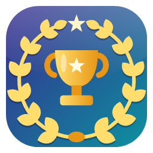
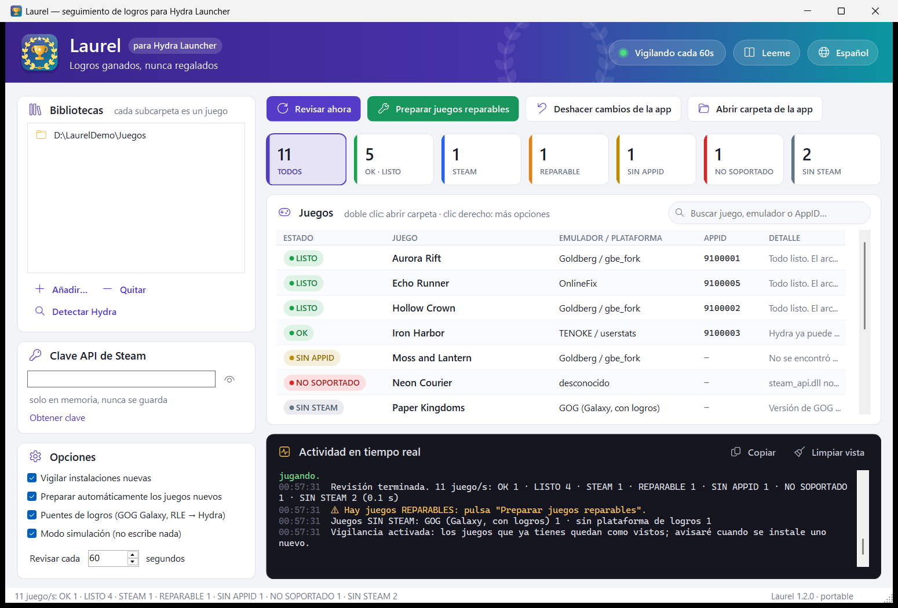
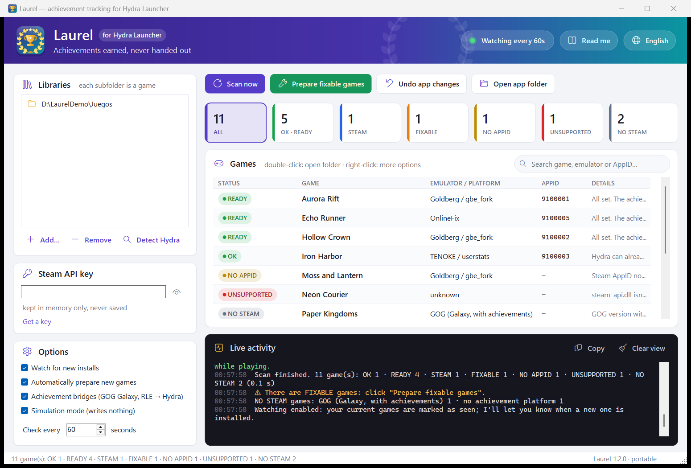

Logros ganados, nunca regalados.Achievements earned, never handed out.
Prepara tus juegos para que Hydra Launcher registre los logros cuando los consigues jugando. Detecta, diagnostica y repara lo que impide que se sincronicen, y nunca desbloquea un logro por su cuenta. Prepares your games so that Hydra Launcher records achievements when you earn them while playing. It detects, diagnoses and fixes what keeps them from syncing, and never unlocks an achievement by itself.


Hydra lee los logros desde los archivos que escriben los emuladores de Steam. Si falta una pieza, juegas, consigues el logro… y Hydra nunca se entera.Hydra reads achievements from the files Steam emulators write. If a piece is missing, you play, you earn the achievement… and Hydra never finds out.
Goldberg / gbe_fork necesita steam_settings\achievements.json y el AppID para saber qué logros existen. Sin ellos, no guarda nada.Goldberg / gbe_fork needs steam_settings\achievements.json and the AppID to know which achievements exist. Without them, it saves nothing.
GOG Galaxy o RLE sí registran tus logros, pero en lugares que Hydra no lee.GOG Galaxy or RLE do record your achievements, but in places Hydra doesn't read.
¿Es la DLL original de Valve, un emulador conocido o uno que no guarda logros? Sin mirar dentro, es imposible saberlo.Is it Valve's original DLL, a known emulator, or one that saves no achievements? Without looking inside, there's no way to tell.
Ábrelo, déjalo junto al reloj y olvídate.Open it, leave it next to the clock and forget about it.
Recorre solo tus bibliotecas de juegos y detecta el emulador o plataforma de cada uno.Walks only your game libraries and detects each game's emulator or platform.
Te dice en claro qué le pasa a cada juego y qué puedes hacer.Tells you plainly what's wrong with each game and what you can do.
Crea los archivos que faltan con la lista oficial de logros de Steam. Nunca sobrescribe nada.Creates the missing files with Steam's official achievement list. Never overwrites anything.
Cuando instalas un juego, espera a que termine y lo prepara solo.When you install a game, it waits for it to finish and prepares it automatically.
Pensado para que Hydra registre lo que de verdad consigues, sin tocar lo que no le corresponde.Built so that Hydra records what you actually earn, without touching what isn't its business.
Verifica la firma digital de steam_api.dll con Windows, sin internet, y busca firmas de 13 emuladores conocidos. Solo lectura.Verifies steam_api.dll's digital signature with Windows, offline, and looks for signatures of 13 known emulators. Read-only.
Copia a Hydra los logros que ya conseguiste en GOG Galaxy o RLE. Lee una copia temporal de la base de datos, nunca la original. Nunca inventa logros.Copies the achievements you already earned in GOG Galaxy or RLE to Hydra. Reads a temporary copy of the database, never the original. Never invents achievements.
Copia de seguridad de la DLL, enlace oficial de gbe_fork y comprobación final. Tú haces el cambio: Laurel no descarga ni instala emuladores.DLL backup, official gbe_fork link and a final check. You make the change: Laurel doesn't download or install emulators.
Anota cada archivo que crea. “Deshacer” los manda a la papelera, y solo si nadie los ha tocado después.Records every file it creates. “Undo” sends them to the Recycle Bin, and only if nobody touched them since.
La clave de API vive solo en memoria y nunca se guarda. Consultas pausadas y limitadas para un uso normal de tu clave.The API key lives only in memory and is never saved. Paced, capped requests so your key's usage stays normal.
Español, inglés, portugués, francés, alemán, ruso, chino y japonés. La versión portable no necesita instalar nada.Spanish, English, Portuguese, French, German, Russian, Chinese and Japanese. The portable build needs nothing installed.
api.steampowered.com por HTTPS. Nunca ejecuta programas de tus juegos.Only connects to api.steampowered.com over HTTPS. Never runs programs from your games.Hydra Achievement Manager (Project HAM) es un gestor de logros completo y muy bien hecho. Laurel no es su sustituto: son dos herramientas con objetivos distintos, y pueden convivir. Hydra Achievement Manager (Project HAM) is a complete, well-made achievement manager. Laurel isn't a replacement for it: they're two tools with different goals, and they can live side by side.
“Que el juego lo registre”“Let the game record it”
Repara lo que impide que tus juegos registren logros, para que cada logro llegue a Hydra en el momento en que lo consigues jugando. Nunca marca un logro por ti.Fixes what keeps your games from recording achievements, so each one reaches Hydra the moment you earn it while playing. It never marks an achievement for you.
“Gestiona tus logros”“Manage your achievements”
Reúne tus logros de Hydra, Steam y RetroAchievements en un solo lugar para verlos, buscarlos, exportarlos y editarlos, incluido desbloquearlos manualmente con la fecha que elijas.Brings your Hydra, Steam and RetroAchievements achievements into one place to view, search, export and edit them, including unlocking them manually with the date you choose.
| Laurel | HAM | |
|---|---|---|
| Desbloquear logros a manoUnlock achievements by hand | Nunca, por diseñoNever, by design | Sí: uno a uno o en lote, con fecha actual, aleatoria o personalizadaYes: one by one or in bulk, with the current, a random or a custom date |
| Detectar el emulador de cada juego instaladoDetect each installed game's emulator | ✓ Goldberg, CODEX, RUNE, OnlineFix, CreamAPI, TENOKE… + firma digital de la DLLGoldberg, CODEX, RUNE, OnlineFix, CreamAPI, TENOKE… + the DLL's digital signature | Detecta el formato del archivo de logros al leerlo o escribirloDetects the achievement file's format when reading or writing it |
| Reparar juegos que no sincronizanFix games that don't sync | ✓ Crea achievements.json y steam_appid.txt desde la lista oficial de SteamCreates achievements.json and steam_appid.txt from Steam's official list |
— |
| Vigilar instalaciones nuevasWatch for new installs | ✓ Prepara cada juego nuevo cuando termina de instalarsePrepares each new game once it finishes installing | Vigila las carpetas de logros y actualiza su vista al instanteWatches achievement folders and refreshes its view instantly |
| Logros de GOG Galaxy y RLE en HydraGOG Galaxy and RLE achievements in Hydra | ✓ Puentes que copian solo los logros ya conseguidosBridges that copy only already-earned achievements | — |
| Formatos de logros que escribeAchievement formats it writes | Solo el formato Goldberg (para los puentes)Only the Goldberg format (for the bridges) | ✓ Más de 10: CODEX, RUNE, OnlineFix, Goldberg, EMPRESS, SKIDROW, CreamAPI, 3DM…More than 10: CODEX, RUNE, OnlineFix, Goldberg, EMPRESS, SKIDROW, CreamAPI, 3DM… |
| Explorar logros, rareza e imágenesBrowse achievements, rarity and images | — | ✓ |
| Steam · RetroAchievements | Usa la API de Steam solo para descargar la lista de logrosUses the Steam API only to download the achievement list | ✓ Steamworks, Steam Web API y RetroAchievementsSteamworks, Steam Web API and RetroAchievements |
| Deshacer / copias de seguridadUndo / backups | Deshacer: a la papelera, solo lo que nadie modificóUndo: to the Recycle Bin, only what nobody modified | Copias de seguridad y restauraciónBackup and restore |
| SistemasSystems | Windows | Windows y Linux (Linux en pruebas)Windows and Linux (Linux in testing) |
Comparación hecha con buena fe a partir del README, las notas de versión y el código público de HAM v1.0.6, revisados en noviembre de 2026. “—” significa que no encontramos esa función. Si algo cambió o no es exacto, abre una issue y lo corregimos. Comparison made in good faith from HAM v1.0.6's README, release notes and public code, reviewed in November 2026. “—” means we didn't find that feature. If something changed or isn't accurate, open an issue and we'll fix it.
Si quieres que tus logros reflejen exactamente lo que juegas, Laurel se encarga de que cada juego los registre solo. Si además quieres explorarlos, buscarlos o recuperar un progreso que perdiste, HAM es una gran herramienta para eso. Funcionan bien juntas.If you want your achievements to reflect exactly what you play, Laurel makes sure every game records them on its own. If you also want to explore them, search them or recover progress you lost, HAM is a great tool for that. They work well together.
Gratis, de uso libre y software libre (GPL-3.0). Para Windows 10 y 11 (64 bits).Free to use and free software (GPL-3.0). For Windows 10 and 11 (64-bit).
La opción más ligera si ya tienes .NET 10 o no te importa instalarlo.The lightest option if you already have .NET 10 or don't mind installing it.
⬇ Descargar .exeDownload .exeLleva .NET dentro y guarda su configuración en su propia carpeta. Ideal para un USB.Carries .NET inside and keeps its settings in its own folder. Great for a USB drive.
⬇ Descargar .zipDownload .zipNo. Solo prepara el juego para que registre los logros cuando los consigues. Los puentes copian únicamente logros que GOG Galaxy o RLE ya registraron como conseguidos.No. It only prepares the game so it records achievements when you earn them. The bridges copy only achievements that GOG Galaxy or RLE already recorded as earned.
Para descargar la lista oficial de logros de cada juego. La clave es gratuita, solo vive en memoria y nunca se guarda en disco ni en el registro.To download each game's official achievement list. The key is free, lives only in memory and is never saved to disk or the log.
No: puedes lanzarlos desde Hydra. Solo hace falta que GOG Galaxy esté abierto, con tu sesión iniciada, mientras juegas, y que el juego esté en tu cuenta.No: you can launch them from Hydra. GOG Galaxy just needs to be running and signed in while you play, and the game must be in your account.
No. Para los juegos NO SOPORTADO ofrece una guía con copia de seguridad y el enlace oficial de gbe_fork, pero el cambio lo haces tú.No. For UNSUPPORTED games it offers a guide with a backup and gbe_fork's official link, but you make the change yourself.